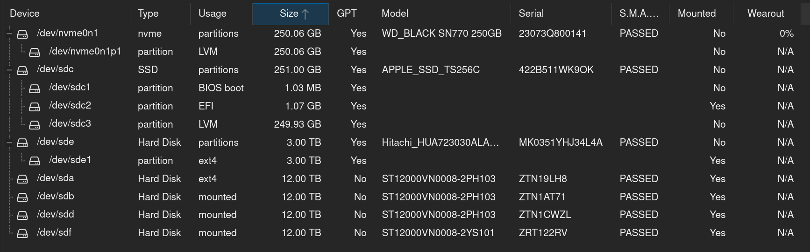
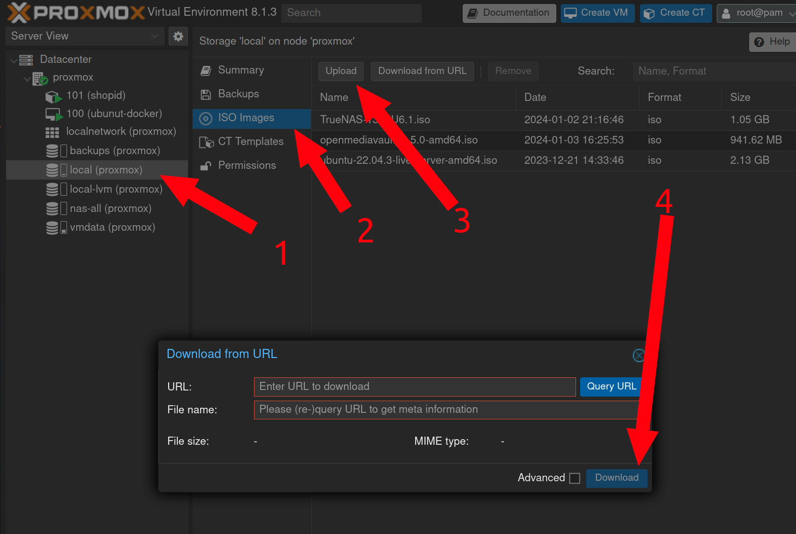

Proxmox
Overview
A desktop tower with Proxmox installed on it was deployed to:
- Be a future home for all LXD containers on the c220 so the c220 can eventually be retired
- Host future projects that need a VM at the shop
- Host 4 x 12TB drives to serve media to the shop LAN
All Proxmox admin is done through the web GUI at https://proxmox.synshop.net, which is reverse proxied through the Caddy server to have a valid TLS cert. The baremetal IP is 10.0.40.16, but of course the proxmox.synshop.net domain resolves to Caddy at .29.
To log into the server, be on the VPN or at the shop, go the URL and use the proxmox credentials from the shop password database.
Install & Hardware
Proxmox was installed with these 7 drives:
- 256GB Apple branded 2.5" SATA SSD: boot drive for prox mox (
/dev/sdc) . Shows aslocal-lvmorpvein Proxmox - 256GB NVMe SSD: data volume for all active VMS (
/dev/nvme0n1). Shows aslocalorvmdatain Proxmox. - 3TB SATA: Backup drive for all Proxmox data, VMs etc. (
/dev/sde). Shows asbackupsin Proxmox. - 4 x 12TB SATA: TBD use for NAS/Media sharing (
/dev/sda,/dev/sdb,/dev/sddand/dev/sdf).
Here's the output of lsblk:
root@proxmox:~# lsblk
NAME MAJ:MIN RM SIZE RO TYPE MOUNTPOINTS
sda 8:0 0 10.9T 0 disk /mnt/nas/ZTN19LH8
sdb 8:16 0 10.9T 0 disk /mnt/nas/ZTN1AT71
sdc 8:32 0 233.8G 0 disk
├─sdc1 8:33 0 1007K 0 part
├─sdc2 8:34 0 1G 0 part /boot/efi
└─sdc3 8:35 0 232.8G 0 part
├─pve-swap 252:0 0 8G 0 lvm [SWAP]
├─pve-root 252:1 0 68.2G 0 lvm /
├─pve-data_tmeta 252:2 0 1.4G 0 lvm
│ └─pve-data-tpool 252:6 0 137.8G 0 lvm
│ ├─pve-data 252:7 0 137.8G 1 lvm
│ └─pve-vz 252:8 0 230G 0 lvm /mnt/nvme
└─pve-data_tdata 252:3 0 137.8G 0 lvm
└─pve-data-tpool 252:6 0 137.8G 0 lvm
├─pve-data 252:7 0 137.8G 1 lvm
└─pve-vz 252:8 0 230G 0 lvm /mnt/nvme
sdd 8:48 0 10.9T 0 disk /mnt/nas/ZTN1CWZL
sde 8:64 1 2.7T 0 disk
└─sde1 8:65 1 2.7T 0 part /mnt/pve/backups
sdf 8:80 1 10.9T 0 disk /mnt/nas/ZRT122RV
nvme0n1 259:0 0 232.9G 0 disk
└─nvme0n1p1 259:1 0 232.9G 0 part
├─vmdata-vm--100--disk--0 252:4 0 32G 0 lvm
└─vmdata-vm--101--disk--0 252:5 0 30G 0 lvm
Within Proxmox, you can see the drives this way:

Downloading a new ISO
To add a new ISO so that you can create a VM with it later:
- Navigate to
localstorage on left - Click
ISO Imagesin middle - click
Uploadbutton at top - Enter ISO URL and click
Download

Creating a new container
- On the left, Click "Datacenter" and then "Proxmox"
- In the upper right click "Create CT"
- On the
Generalscreen fill outhostname,passwordandconfirm password. Add your ownSSH Public key(s)and then leave the rest default. Note - by default containers won't allow yout to SSH with a password, only SSHs keys - Click
Next - On the
Templatescreen, forStoragechooselocaland chooseUbuntufrom theTemplatedrop down. - Click
Next - On the
Disksscreen, forStoragechoosevmdataand choose30forDisk size (GiB). leave the rest default. - Click
Next - On the
CPUscreen, forCoreschoose2and leave the rest default. - Click
Next - On the
Memoryscreen, forMemorychoose2048and leave the rest default. - Click
Next - On the
Networkscreen, forIPv4/CIDRchoose an avail static IP. ForGatewayenter10.0.40.1and leave the rest default. - Click
Next - On the
DNSscreen, forDNS Serversenter enter10.0.40.66 - Click
Next - On the final
Confirmscreen chooseStart after createdand clickFinish - After the container is created choose it from the list on the right, click on
Optionsand double clickStart at bootto be checked - Go to "Datacenter" on the left navigation, click "Backup" in the main pannel, double click the one listed backup job - add your new container to be backed up nightly
Creating a new VM
- On the left, Click "Datacenter" and then "Proxmox"
- In the upper right click "Create VM"
- On the
Generalscreen leaveNodeandVM IDwith the default value. Enter a descriptive, but short name inName. - Check the
Advancedcheck box near the bottom and checkStart at bootbox to ensure the VM is booted when ever the system reboots. - Click
Next - On the
OSscreen, if you're installing from an ISO, forStoragechooselocaland choose the ISO in theISO imagedrop down. - Leave all other fields with default values and click
Next - On the
Systemscreen, leave all fields with default values and clickNext - On the
Disksscreen, choosevmdataforStoragewhich uses the "256GB NVMe SSD" device for very fast data. - If you need more or less storage than
32, update theDisk Size (GiB)as needed. - Leave all other fields with default values and click
Next - On the
CPUscreen, choose2forcoresand leave all the rest default and clickNext - On the
Memoryscreen, add more or less RAM than2GBas needed. Leave all the rest default and clickNext - On the
Networkscreen, leave all fields with default values and clickNext(be sure to set a static IP in the VM after it boots) - On the
Confirmscreen, review all data and clickFinish - Click on the right side of the screen where your new VM shows up as
NUMBER (Name)eg102 (truenas) - Click
Consoleand chooseStart now - Go to "Datacenter" on the left navigation, click "Backup" in the main pannel, double click the one listed backup job - add your new VM to be backed up nightly
NAS Drives
These 4 x 12TB SATA drives have been provisioned a few different ways, none of which have worked out.
TrueNAS
Originally it was thought that having some redundancy was helpful, so a 32TGB ZFS Raidz1 was created by passing them through raw to TrueNAS. Something like:
- Create a TrueNAS install in a new VM, but don't provision any storage. Resulting VM ID was
102. -
As
rooton the Proxmox machine (via web Shell), find the raw device IDs:root@proxmox:~# ls -al /dev/disk/by-id | egrep 'ZTN1CWZL|ZTN1AT71|ZTN19LH8|ZRT122RV' lrwxrwxrwx 1 root root 9 Feb 4 15:18 ata-ST12000VN0008-2PH103_ZTN19LH8 -> ../../sda lrwxrwxrwx 1 root root 9 Feb 4 15:08 ata-ST12000VN0008-2PH103_ZTN1AT71 -> ../../sdb lrwxrwxrwx 1 root root 9 Feb 4 15:16 ata-ST12000VN0008-2PH103_ZTN1CWZL -> ../../sdd lrwxrwxrwx 1 root root 9 Feb 4 15:10 ata-ST12000VN0008-2YS101_ZRT122RV -> ../../sdf
-
Still in the
rootshell, pass the raw devices into the TrueNAS VM which has ID102:qm set 102 -scsi1 /dev/disk/by-id/ata-ST12000VN0008-2PH103_ZTN19LH8 qm set 102 -scsi2 /dev/disk/by-id/ata-ST12000VN0008-2PH103_ZTN1AT71 qm set 102 -scsi3 /dev/disk/by-id/ata-ST12000VN0008-2PH103_ZTN1CWZL qm set 102 -scsi4 /dev/disk/by-id/ata-ST12000VN0008-2YS101_ZRT122RV
-
Reboot the TrueNAS VM to make sure it can see the new disks added to the VM.
- Use the TrueNAS web GUI to add the 4 drives to a ZFS Raidz1 volume
MergerFS
Realizing that we wanted full 48TB with no redundancy, we thought that MergerFS would work better. The TrueNAS VM was deleted and then the following was done:
- Format the 4 drives as
ext4(do this once per drive ID):mkfs.ext4 /dev/disk/by-id/ata-ST12000VN0008-2YS101_ZRT122RV - Create mount directories:
mkdir /mnt/nas;mkidr /mnt/nas/ZRT122RV;mkdir /mnt/nas/ZTN1CWZL;/mnt/nas/ZTN1AT71;/mnt/nas/ZTN19LH8 -
Add an
/etc/fstabentry that mounted all 4 in/mnt/nasand then usermergfsto mount all 4 in one line to/mnt/nas-all:/dev/disk/by-id/ata-ST12000VN0008-2YS101_ZRT122RV /mnt/nas/ZRT122RV ext4 defaults 0 0 /dev/disk/by-id/ata-ST12000VN0008-2PH103_ZTN19LH8 /mnt/nas/ZTN19LH8 ext4 defaults 0 0 /dev/disk/by-id/ata-ST12000VN0008-2PH103_ZTN1AT71 /mnt/nas/ZTN1AT71 ext4 defaults 0 0 /dev/disk/by-id/ata-ST12000VN0008-2PH103_ZTN1CWZL /mnt/nas/ZTN1CWZL ext4 defaults 0 0
/mnt/nas/* /mnt/nas-all fuse.mergerfs defaults,nonempty,allow_other,use_ino,cache.files=off,moveonenospc=true,category.create=mfs,dropcacheonclose=true,minfreespace=250G,fsname=mergerfs 0 0
-
checking
df -h, we can see this is working as expected:root@proxmox:~# df -h|egrep 'Size|nas' Filesystem Size Used Avail Use% Mounted on /dev/sdf 11T 36K 11T 1% /mnt/nas/ZRT122RV /dev/sda 11T 36K 11T 1% /mnt/nas/ZTN19LH8 /dev/sdb 11T 36K 11T 1% /mnt/nas/ZTN1AT71 /dev/sdd 11T 40K 11T 1% /mnt/nas/ZTN1CWZL mergerfs 44T 148K 42T 1% /mnt/nas-all
5. This was then added to Proxmox as aDirectory, but this looks to not be the best path forward. Proxmox then tried to format all 48TB as another drive or something? Likely we want to undue all this and pass the raw devices into a new NAS based VM that can provision MergerFS volume in there and then share that out to the LAN.
Next steps TBD!